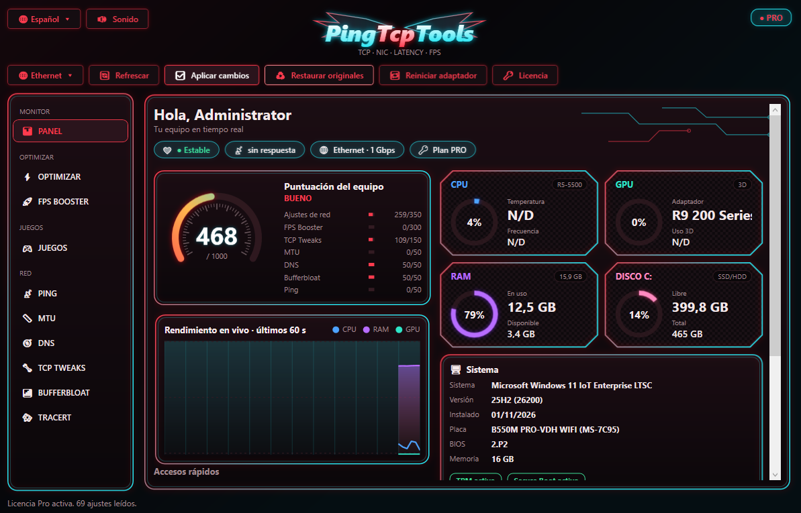

Cómo bajar el ping en Windows 10 y 11: guía completa para jugar online
This guide is currently available in Spanish only. Use your browser’s translate option to read it in English.

El ping alto es la queja más común de quien juega online: disparas primero y aun así pierdes el duelo, el personaje se teletransporta o el juego te expulsa por «conexión inestable». La buena noticia es que una parte importante del problema suele estar dentro de tu casa: en tu PC, tu tarjeta de red, tu Wi-Fi o tu router. Esta guía te explica, de forma ordenada y sin promesas falsas, qué puedes mejorar y cómo hacerlo.
Qué es el ping y qué valores son buenos
El ping (o latencia) es el tiempo, en milisegundos (ms), que tarda un paquete de datos en ir desde tu PC hasta un servidor y volver. Cuanto más bajo, antes llega tu acción al servidor del juego y antes recibes la respuesta.
| Ping | Experiencia en juegos competitivos |
|---|---|
| 0–30 ms | Excelente. Ideal para shooters y juegos de lucha. |
| 30–60 ms | Muy bueno. La mayoría de jugadores no nota diferencia. |
| 60–100 ms | Aceptable. Se empieza a notar en duelos rápidos. |
| 100–150 ms | Mejorable. Retraso visible al disparar o esquivar. |
| +150 ms | Malo. Teletransportes, golpes que «no registran». |
Tan importante como el ping medio es su estabilidad. Un ping fijo de 70 ms se juega mejor que uno que salta entre 30 y 200 ms. Esa variación se llama jitter, y si además se pierden paquetes, hablamos de pérdida de paquetes. Ambos se explican en la guía de ping, jitter y pérdida de paquetes.
Qué hace que tu ping sea alto
El ping total es la suma de varios tramos. Conviene saber cuáles puedes controlar:
- Distancia al servidor (no controlable): la señal viaja por fibra a una velocidad finita. Desde Lima a un servidor en Miami siempre habrá decenas de milisegundos que ningún programa puede quitar.
- Tu proveedor de internet y su ruta (poco controlable): cómo enruta el tráfico hasta el servidor. Se puede diagnosticar con tracert.
- Tu red local (controlable): Wi-Fi con interferencias, cables en mal estado, router saturado, otros dispositivos descargando.
- Tu PC (controlable): ahorro de energía de la tarjeta de red, cómo Windows agrupa los paquetes, interrupciones, programas en segundo plano.
Un buen optimizador actúa sobre los dos últimos puntos. Por eso hay que desconfiar de cualquier programa que prometa «bajar el ping un 80 %» para todo el mundo: si la mayor parte de tu ping es distancia, ninguna herramienta la elimina.
Paso 1: mide antes de cambiar nada
Sin una medición inicial no sabrás si un cambio sirvió. Hazlo así:
- Cierra juegos, descargas y streaming.
- Abre el Símbolo del sistema y escribe
ping 8.8.8.8 -n 50. - Anota el valor Media, el Máximo y el porcentaje de perdidos.
- Repite la prueba mientras alguien en casa ve un video o descarga algo. Si el ping se dispara, tienes bufferbloat.
PingTcpTools hace esta medición desde su panel principal, guarda la referencia y muestra una puntuación del equipo de 0 a 1000 que sube a medida que aplicas optimizaciones, para que compares el antes y el después.
Paso 2: cable en vez de Wi-Fi
Es el cambio con mayor impacto y cuesta poco. El Wi-Fi comparte el aire con los vecinos, sufre interferencias de paredes y electrodomésticos, y tiene retransmisiones que generan picos de latencia. Un cable de red (RJ45, categoría 5e o 6) entre la PC y el router elimina casi todo el jitter local.
Si no puedes cablear, usa la banda de 5 GHz, acércate al router, evita repetidores en cadena y considera adaptadores PLC (red por la instalación eléctrica) de buena calidad.
Paso 3: libera tu conexión
- Pausa actualizaciones de Windows, Steam, Epic, Battle.net y la sincronización de OneDrive o Google Drive mientras juegas.
- Revisa el Administrador de tareas → Rendimiento → Ethernet/Wi-Fi para ver si algo está usando la red.
- Pregunta en casa: un 4K en streaming o una videollamada pueden saturar la subida.
- Reinicia el router de vez en cuando y mantén su firmware actualizado.
Paso 4: controla el bufferbloat
Si tu ping sube mucho solo cuando la conexión está ocupada, el culpable es el bufferbloat: el router acumula demasiados paquetes en cola. Se arregla sobre todo en el router (con SQM o QoS). La prueba de bufferbloat de PingTcpTools satura tu descarga y tu subida, mide el ping bajo carga y te da una nota de A+ a F. Toda la explicación está en la guía de bufferbloat.
Paso 5: ajusta la tarjeta de red
Las tarjetas de red vienen configuradas para ahorrar energía y mover mucho volumen de datos, no para la menor latencia. Funciones como la moderación de interrupciones, el Ethernet de bajo consumo (EEE) o los offloads que agrupan paquetes pueden añadir pequeños retrasos. Desactivarlas puede reducir la latencia y el jitter a cambio de algo más de uso de CPU. Lo explicamos ajuste por ajuste en la guía de ajustes de la tarjeta de red.
Paso 6: ajustes TCP/IP de Windows
Windows tiene parámetros de red pensados para descargas, no para juegos: el algoritmo de Nagle, la frecuencia de confirmaciones TCP o el límite de tráfico de red mientras suena audio. Algunos ayudan solo en juegos que usan TCP. Están explicados con sus pros y contras en la guía de optimización TCP/IP.
Paso 7: DNS y MTU
Un DNS rápido acelera el inicio de sesión, la carga de tiendas y páginas, pero normalmente no cambia el ping dentro de la partida. Aun así vale la pena elegir el más rápido para tu ubicación: lo explicamos en cuál es el mejor DNS para jugar. El MTU, si está mal configurado, puede provocar fragmentación y desconexiones; revisa la guía de MTU.
Paso 8: elige bien el servidor y revisa la ruta
En el juego, selecciona la región más cercana. Si aun así tu ping es alto, usa tracert para ver en qué punto de la ruta aparece el retraso; si está fuera de tu casa, la solución pasa por tu proveedor. Te enseñamos a leerlo en la guía de diagnóstico.
Cómo lo hace PingTcpTools
PingTcpTools reúne todos estos pasos en una sola aplicación para Windows 10 y 11:
- Mediciones: ping, bufferbloat con nota de A+ a F, MTU óptimo y tracert con el salto más lento resaltado.
- Perfiles en un clic: Conservador, Medio y Extremo, que aplican ajustes de red y de Windows de menor a mayor intensidad (ver guía de perfiles).
- Control fino: cada ajuste de la tarjeta de red y de TCP/IP con su descripción y valor recomendado.
- Todo reversible: guarda el valor original de cada cambio y lo devuelve con «Restaurar originales».
Los resultados dependen de tu equipo y tu conexión. Recomendamos crear un punto de restauración de Windows antes de aplicar cambios por primera vez.
Preguntas frecuentes
¿Un programa puede bajar mi ping a la mitad?
Solo si la mayor parte de tu ping viene de problemas locales (Wi-Fi, bufferbloat, ahorro de energía de la tarjeta de red). La distancia al servidor y la ruta de tu proveedor no se pueden cambiar con software.
¿Cambiar el DNS baja el ping en los juegos?
Normalmente no. El DNS solo traduce nombres a direcciones al conectarte; durante la partida el juego ya conoce la dirección del servidor.
¿Es mejor jugar con cable o con Wi-Fi?
Con cable. Elimina interferencias y retransmisiones del Wi-Fi, que son la causa principal de picos y jitter en casa.
¿Las VPN para gamers bajan el ping?
A veces mejoran la ruta hacia un servidor concreto si tu proveedor enruta mal, pero también pueden añadir latencia. Mide con y sin VPN antes de decidir.
¿Puedo deshacer los cambios?
Sí. PingTcpTools guarda el valor original de cada ajuste y el botón «Restaurar originales» los devuelve. Además recomendamos un punto de restauración de Windows.
Guías relacionadas
Bufferbloat: qué es y cómo reducirlo
Por qué tu ping se dispara cuando alguien descarga o ve videos, cómo medirlo y cómo solucionarlo.
Ping, jitter, pérdida de paquetes y tracert
Cómo medir latencia, jitter y pérdida de paquetes, y cómo leer un tracert para saber de quién es la culpa.
Ajustes de la tarjeta de red para gaming
Cada propiedad avanzada del adaptador explicada: qué hace, cuándo cambiarla y qué ganas o pierdes.
Los resultados dependen de tu equipo, tu tarjeta de red y tu conexión. Ningún programa puede garantizar una mejora concreta de ping o FPS. Crea un punto de restauración de Windows antes de cambiar ajustes del sistema.